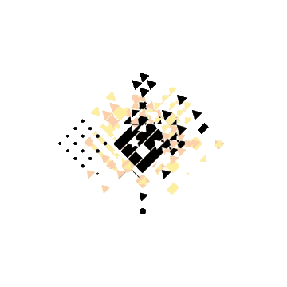

<app-header [sidenavMode]="mode"></app-header>
<mat-sidenav-container>
    <mat-sidenav #sideNav mode="side">
        
        <h1>TODO IT</h1>
        <h1>Menu</h1>
        <mat-divider></mat-divider>
        <app-side-nav></app-side-nav>
    </mat-sidenav>
    <mat-sidenav-content class="container-content">
        <div class="content">
            <router-outlet></router-outlet>

        </div>
    </mat-sidenav-content>
</mat-sidenav-container>

